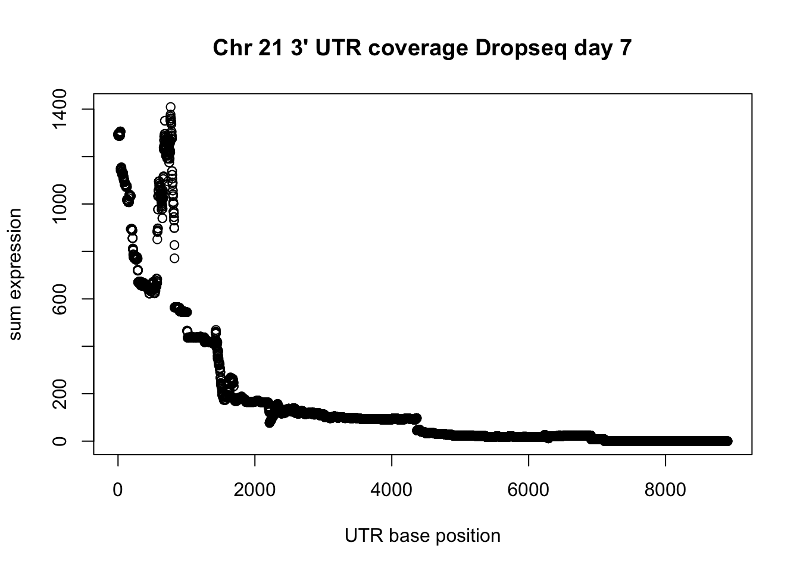
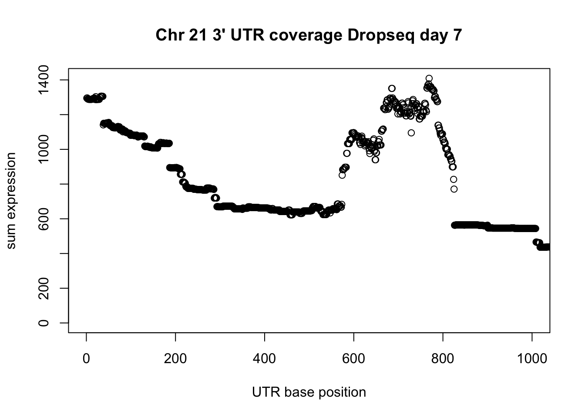
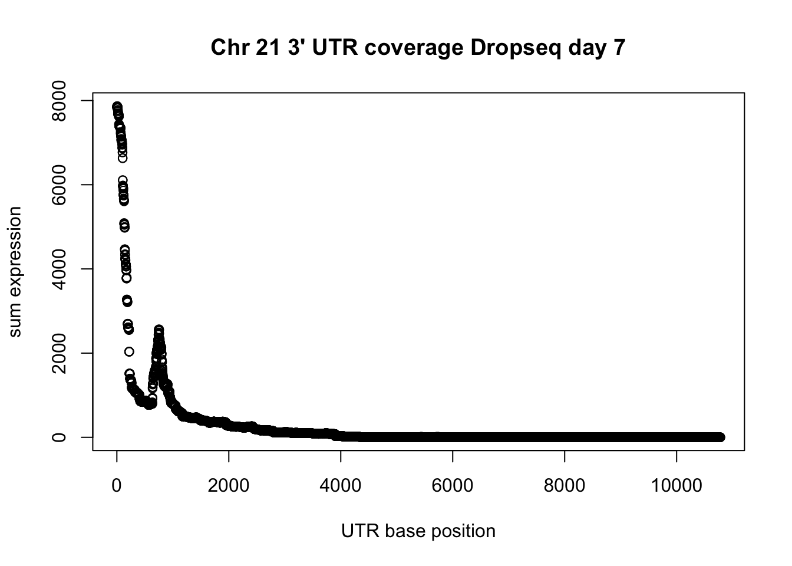
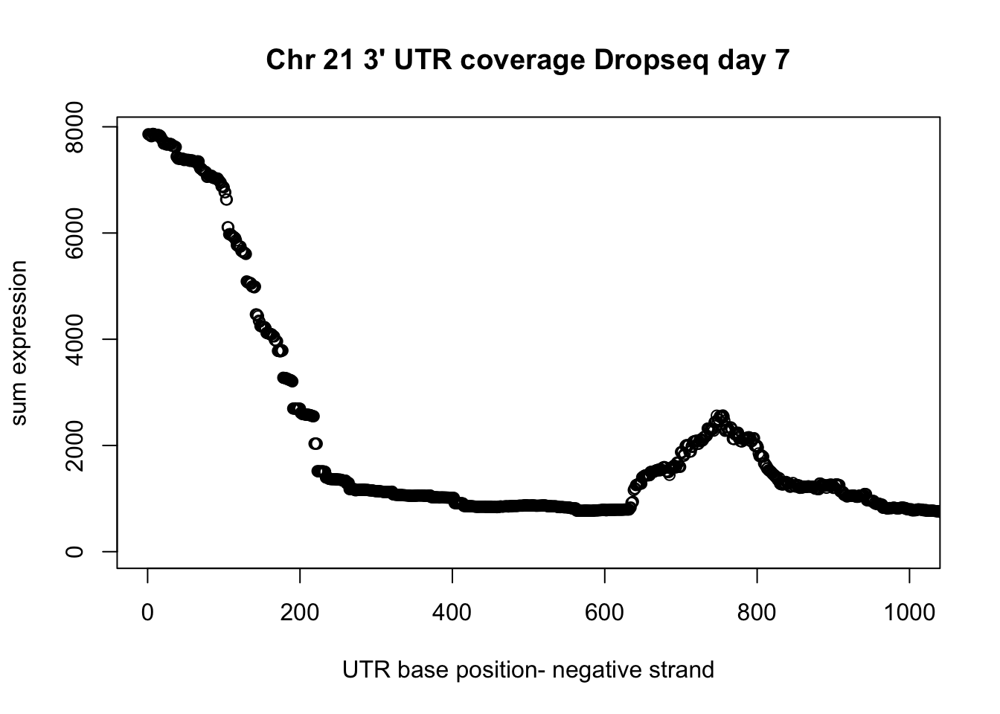
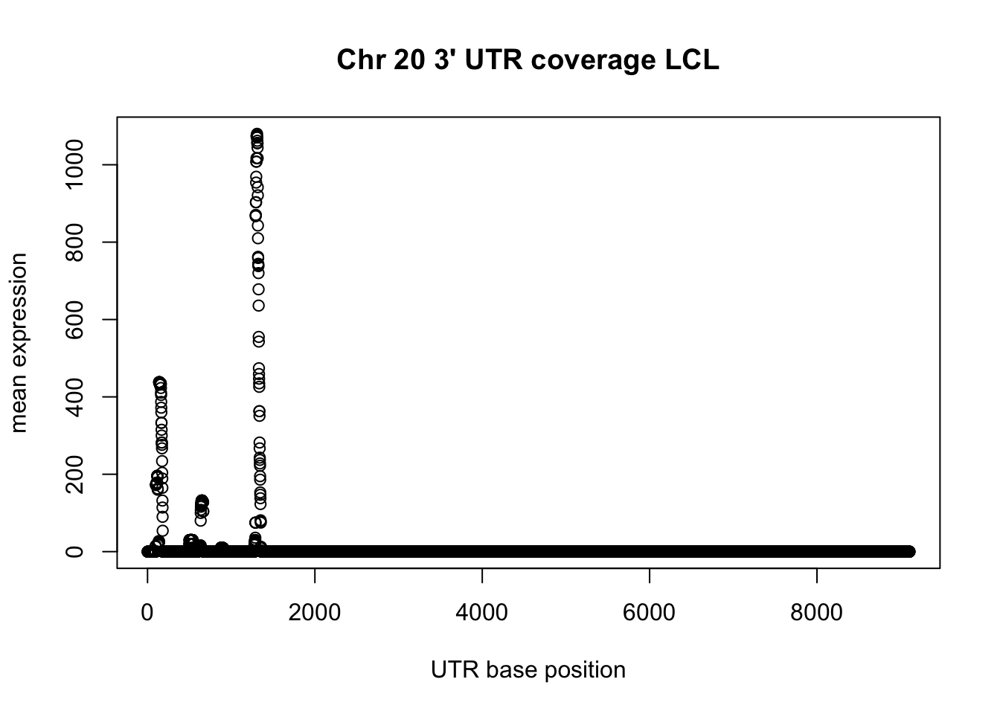
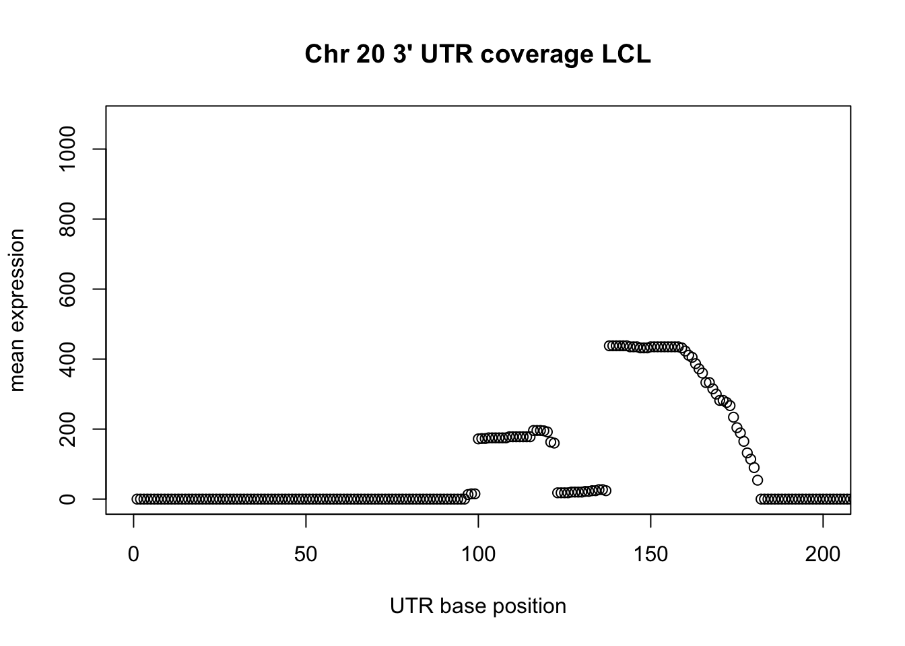
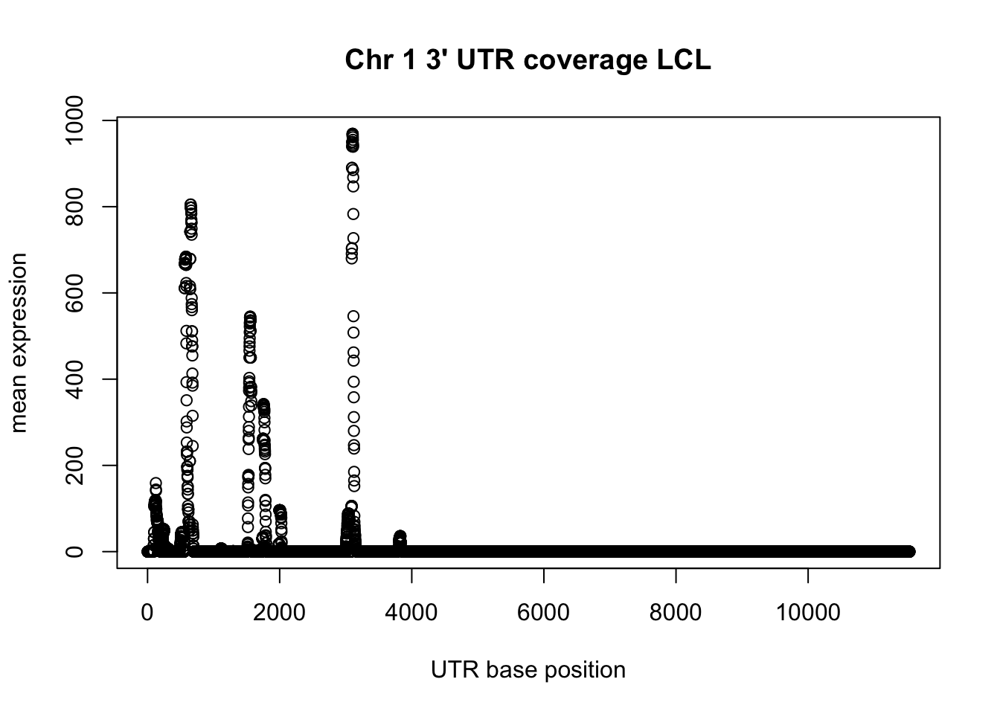

Last updated: 2018-01-31
Code version: 308d2b5
I have a file with the 3` UTRs and I want to extract coverage from the drop and dronc seq bam files that are in these UTR regions.
I will use:
This is taking too much memory. I am going to convert bam to a bed file then sort it.
bedtools bamtobed -i /project2/gilad/spott/dropBams/Day7_cardiomyocytes_drop_seq.bam > Day7_cardiomyocytes_drop_seq.bed
sort -k1,1 -k2,2n Day7_cardiomyocytes_drop_seq.bed > Day7_cardiomyocytes_drop_seq_sort.bed Do this for the UTR file as well.
sort -k1,1 -k2,2n three_prime_utr.bed > three_prime_utr_sort.bed Now add the sorted to the coverage: Update the drop7_cardio_3UTR_cov.sh script
bedtools coverage -d -sorted -a /project2/gilad/briana/apa_sites/Day7_cardiomyocytes_drop_seq_sort.bed -b /project2/gilad/briana/apa_sites/three_prime_utr_sort.bed > drop7_cardio_3utr.txtDo this for one of 3’ seq lines too (LCL). The scipt is called lcl_3UTR_cov.sh.
These files are not correct. They have coverage for a region rather than per base in each UTR. Try to switch a and b in the script.
Now this seems correct. THe file has the UTR regions. A line for each base in the region in column 6 and the coverage at that base in column 7.
LCL_3utrAB.bed
drop7_cardio_3utrAB.bed
I will continue this analysis on the Rstudio for midway because the coverage files are so big.
I am now using a python dictionary to create a file that has the UTRs as keys and the values as a list of the read count for that UTR. The script is /project2/gilad/briana/apa_sites/code/cov_per_UTR.py
To run this I have to make a bash script. I called it test.sh for now.
It has the bash heading, module load python, and the following line to call the pythn script.
‘python cov_per_UTR.py ../LCL_3utrAB.bed ../output/cov_at_UTRs_LCL.csv’
This takes too long to run. I will up the time and add a step that creates a file from the UTR list. This will help me know if the keys are created partway through the run. The new py script is cov_per_UTR2.py and takes 3 arguments, data, a UTR_names file and a full output file. The bash script to run this is /project2/gilad/briana/apa_sites/code/utr_py_lcl.sh. I updates this file for the drop7 coverage file as well. The bash script for this is /project2/gilad/briana/apa_sites/code/utr_py_drop7.sh.
First seperate the files by pos and neg strand UTR
awk '{if ($6 == "+") {print} }' drop7_cardio_3utrAB.bed > drop7_cardio_3utrAB.pos.bed
awk '{if ($6 == "-") {print} }' drop7_cardio_3utrAB.bed > drop7_cardio_3utrAB.neg.bed
awk '{if ($6 == "-") {print} }' LCL_3utrAB.bed > LCL_3utrAB.neg.bed
awk '{if ($6 == "+") {print} }' LCL_3utrAB.bed > LCL_3utrAB.pos.bed
Use the group by bedtools function to group by the 7th column (base number in the UTR) and get the mean for the coverage at that base. This script is /project2/gilad/briana/apa_sites/groupby/per_base_mean.sh
#!/bin/bash
#SBATCH --job-name=mean_UTR
#SBATCH --time=2:00:00
#SBATCH --partition=gilad
#SBATCH --mem=10G
#SBATCH --mail-type=END
#SBATCH --ntasks-per-node=2
module load Anaconda3
source activate net-seq
bedtools groupby -i drop7_cardio_3utrAB.pos.bed -g 7 -c 8 -o mean > drop7_cardio_pos_mean.bed
bedtools groupby -i drop7_cardio_3utrAB.neg.bed -g 7 -c 8 -o mean > drop7_cardio_neg_mean.bed
bedtools groupby -i LCL_3utrAB.pos.bed -g 7 -c 8 -o mean > LCL_pos_mean.bed
bedtools groupby -i LCL_3utrAB.neg.bed -g 7 -c 8 -o mean > LCL_neg_mean.bedThis doesnt work. I am going to subset the file and try this for 1 chromosome.
awk '{if ($1 == "chr21") {print} }' drop7_cardio_3utrAB.pos.bed > drop7_cardio_3utrAB.pos.chr21.beddrop7_3UTR_pos_chr21= read.table("../data/drop7_cardio_3utrAB.pos.chr21.bed", header=FALSE)library(dplyr)
Attaching package: 'dplyr'The following objects are masked from 'package:stats':
filter, lagThe following objects are masked from 'package:base':
intersect, setdiff, setequal, uniongroup_by(drop7_3UTR_pos_chr21, V7) %>% summarise(sum=sum(V8)) -> UTR_21_cov
plot(UTR_21_cov$sum, ylab="sum expression", xlab="UTR base position", main="Chr 21 3' UTR coverage Dropseq day 7")
utr_unique_pos= unique(drop7_3UTR_pos_chr21[,1:3])
summary(utr_unique_pos$V3-utr_unique_pos$V2) Min. 1st Qu. Median Mean 3rd Qu. Max.
2 286 642 1269 1443 8907 plot(UTR_21_cov$sum, ylab="sum expression", xlab="UTR base position", main="Chr 21 3' UTR coverage Dropseq day 7", xlim = c(0,1000))
Do this on the negative strand.
drop7_3UTR_neg_chr21= read.table("../data/drop7_cardio_3utrAB.neg.chr21.bed", header=FALSE)
group_by(drop7_3UTR_neg_chr21, V7) %>% summarise(sum=sum(V8)) -> UTR_21neg_cov
plot(UTR_21neg_cov$sum, ylab="sum expression", xlab="UTR base position", main="Chr 21 3' UTR coverage Dropseq day 7")
Average utr size:
utr_unique= unique(drop7_3UTR_neg_chr21[,1:3])
summary(utr_unique$V3-utr_unique$V2) Min. 1st Qu. Median Mean 3rd Qu. Max.
2.0 102.0 166.0 564.4 414.0 10781.0 Subset plot wit this information:
plot(UTR_21neg_cov$sum, ylab="sum expression", xlab="UTR base position- negative strand", main="Chr 21 3' UTR coverage Dropseq day 7", xlim=c(0,1000))
With the 3` seq:
LCL_3UTR_neg_chr20= read.table("../data/LCL_3utrAB.neg.chr20.bed", header=FALSE)
group_by(LCL_3UTR_neg_chr20, V7) %>% summarise(sum=sum(V8)) -> LCL_UTR_20_cov
plot(LCL_UTR_20_cov$sum, ylab="mean expression", xlab="UTR base position", main="Chr 20 3' UTR coverage LCL")
utr_lclneg_unique= unique(LCL_3UTR_neg_chr20[,1:3])
summary(utr_lclneg_unique$V3-utr_lclneg_unique$V2) Min. 1st Qu. Median Mean 3rd Qu. Max.
2.0 101.0 172.0 582.8 576.2 9106.0 Plot a little past the median:
plot(LCL_UTR_20_cov$sum, ylab="mean expression", xlab="UTR base position", main="Chr 20 3' UTR coverage LCL", xlim=c(0,200))
LCL_3UTR_pos_chr1= read.table("../data/LCL_3utrAB_pos.chr1.bed", header=FALSE)
group_by(LCL_3UTR_pos_chr1, V7) %>% summarise(sum=sum(V8)) -> LCL_UTR_1_cov
plot(LCL_UTR_1_cov$sum, ylab="mean expression", xlab="UTR base position", main="Chr 1 3' UTR coverage LCL")
sessionInfo()R version 3.4.2 (2017-09-28)
Platform: x86_64-apple-darwin15.6.0 (64-bit)
Running under: macOS Sierra 10.12.6
Matrix products: default
BLAS: /Library/Frameworks/R.framework/Versions/3.4/Resources/lib/libRblas.0.dylib
LAPACK: /Library/Frameworks/R.framework/Versions/3.4/Resources/lib/libRlapack.dylib
locale:
[1] en_US.UTF-8/en_US.UTF-8/en_US.UTF-8/C/en_US.UTF-8/en_US.UTF-8
attached base packages:
[1] stats graphics grDevices utils datasets methods base
other attached packages:
[1] dplyr_0.7.4
loaded via a namespace (and not attached):
[1] Rcpp_0.12.15 assertthat_0.2.0 digest_0.6.14 rprojroot_1.3-2
[5] R6_2.2.2 backports_1.1.2 git2r_0.21.0 magrittr_1.5
[9] evaluate_0.10.1 pillar_1.1.0 rlang_0.1.6 stringi_1.1.6
[13] bindrcpp_0.2 rmarkdown_1.8.5 tools_3.4.2 stringr_1.2.0
[17] glue_1.2.0 yaml_2.1.16 compiler_3.4.2 pkgconfig_2.0.1
[21] htmltools_0.3.6 bindr_0.1 knitr_1.18 tibble_1.4.2 This R Markdown site was created with workflowr